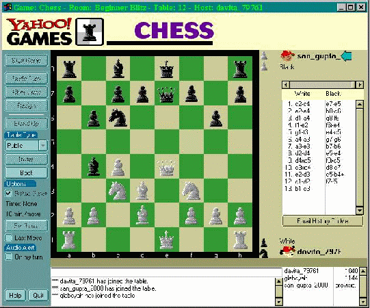

Carrick's page

Hello, I am carrick, and welcome to my webpage here on the internet.
I am 26 years old. I study with the confusers and hope to get a job working for ericsson. I like linux, wood working and big into music. I drive an old car and have a big subwoofer in it. I am fond of cats. she/her pronouns.
Confuzer Languages i know of..
- java proably the strongest with java at the moment. As well as some of the fluff that comes with it, junit 5, maven ect

- html js css I hate all of these but i dont hate js the most.
- C sound pretty nice little thingy for making the sound with a confuzer
- Processing. have some stuff later on in the page about that but i do like processing quite a bit. its based off js but has loads of nice libaries that make it feel more cohesive than js. nice ide as well as loads of nice tutorials. and the lovely The Nature of Code book
- python, not a fan at all of pyhton but I appreciate how nicely it allows some tasks to be done. for example the buttons at the end of this page the html was creted by a pythong script.
- C, I am starting to learn c as I do want to be able to use lower level programming languages. I kinda love the idea of using a lang so old and so understood and simple in its form. like 32 keywords is kinda ridc.
- mysql and other stuff like that. I am not the best though.
- other silly stuff like i used to use gamemaker for years and proably understand those scripts a little..

I drive a 2003 golf mk4
Its pretty bad the moment. leaking oil with a cracked windscreen...
I never thought I would drive a golf but I am found of the older cars.
SITE STILL UNDER CONTSTUCTION

.
Send me Mail if you have any questions, suggestions, or to say hello

I have two degrees in music technology, and like playing guitar, synth and bass. I also like programming music using programmes such as c sound. click this yoke to check out my musics. I am an avid player of chess as well, click these to add me if you play online chess.
I am an avid player of chess as well, click these to add me if you play online chess.

lichess
Chess.com
I take loads of pictures too, click the camera to follow me on instagram
or click this to see some photos on here